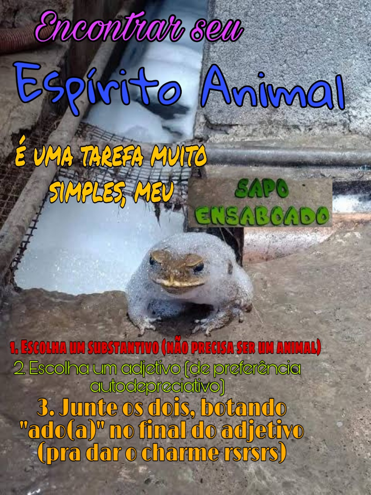
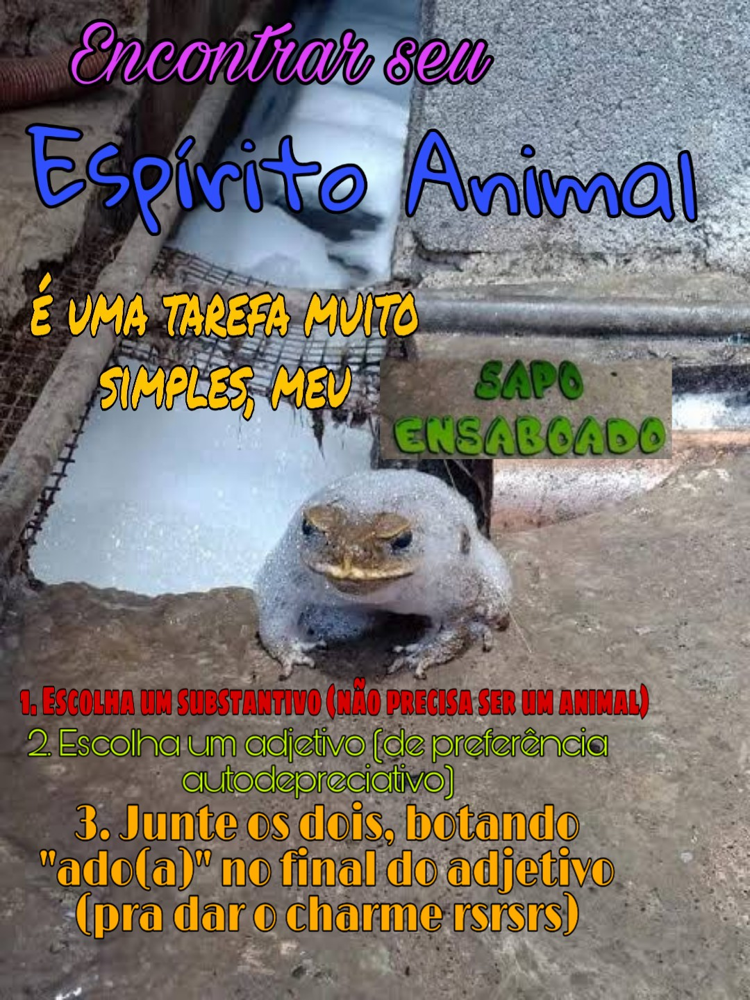

O meu Espírito Animal é o Sapo Ensaboado. Qual o seu? Não sabe? Eu lhe ajudo a decobrir:
Exemplo: Ela é linda e eu sou apenas um Messi Rebaixado...
Clique aqui para voltar e mudar o seu caminho! (ou descobrir um novo espirito rsrsrs)O meu Espírito Animal é o Sapo Ensaboado. Qual o seu? Não sabe? Eu lhe ajudo a decobrir:
Exemplo: Ela é linda e eu sou apenas um Messi Rebaixado...
Clique aqui para voltar e mudar o seu caminho! (ou descobrir um novo espirito rsrsrs)